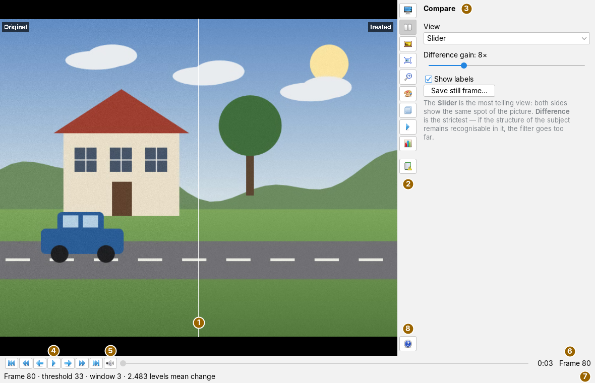
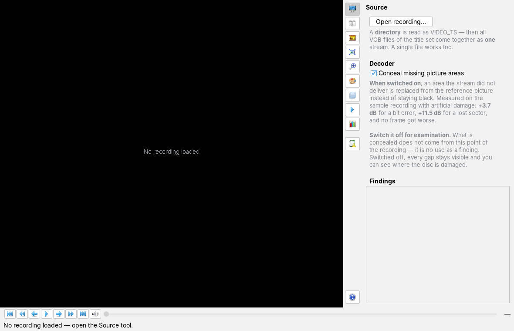
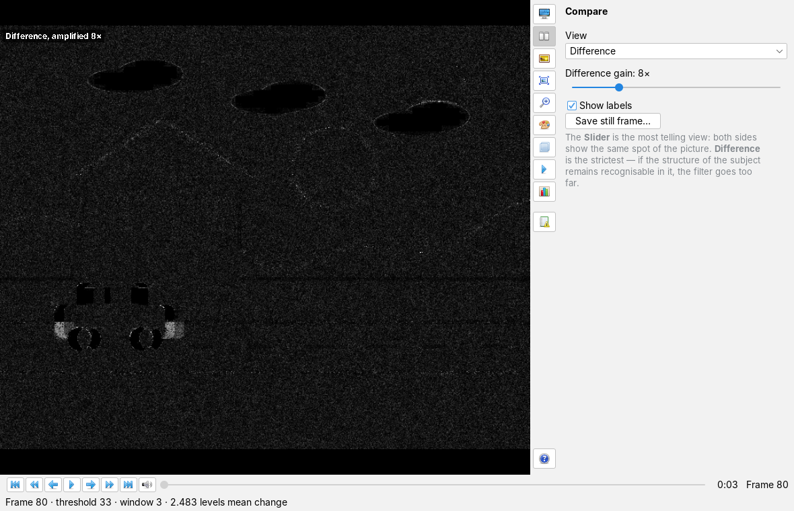
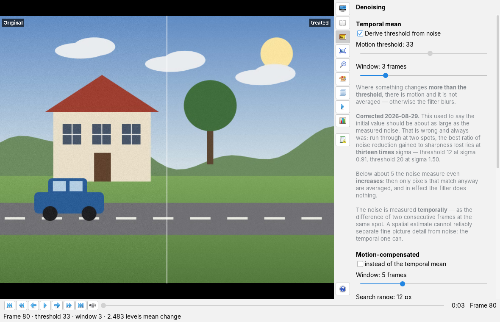
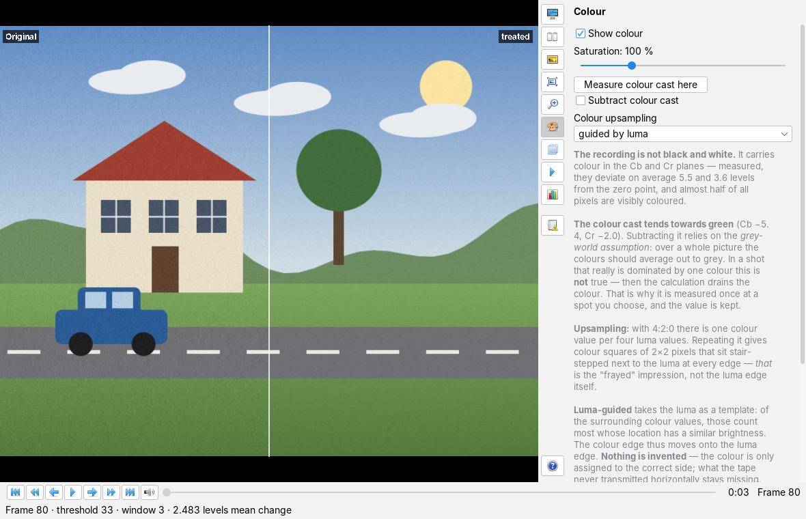
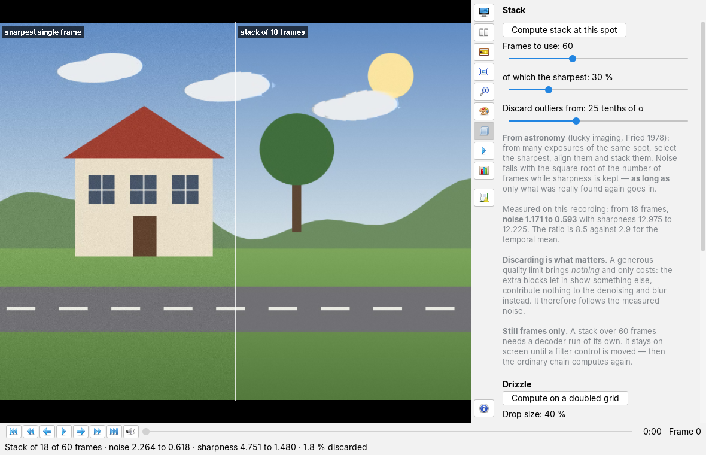

Using video forensics
User page, as of 7 October 2026. How to open a recording, compare original and treatment, denoise, deinterlace, sharpen, adjust the colour, stack frames, measure, save evidence images and listen to the sound; plus the command-line tools Steckbrief and VideoRestore. The pictures are screenshots of the app with entirely invented test material: a drawn street scene with a house, a tree and clouds, into which a car drives from frame 62, as an MPEG-1 picture stream of 100 frames at 720 × 576 pixels with artificial noise.
The window
The app is opened from the Applications menu with Open video forensics… or with Alt+Z. On the left is the picture, on the right the narrow vertical tool bar with the cards, below the playback bar and underneath the message line.

The view always shows a pair of pictures of the same spot: on the left what the decoder delivered (Original), on the right the same frame after the configured filter chain (treated). How the two are set against each other is chosen on the Compare card. The picture is fitted with its aspect ratio; if the pixels are not square (about 1.067 to 1 for PAL 4:3), it is corrected.
Each button of the bar opens its card next to it; a second click on the same button closes it again, and the picture gets the full width. The cards are 350 pixels wide and scroll vertically when their content is longer. All controls take effect immediately, there is no Apply; every slider shows its value in its label. Below each block of settings a grey hint explains what the setting is good for and what it costs.

The tool bar
The buttons carry symbols only; their name is in the tooltip and in the heading of the card. The ten card buttons are mutually exclusive: at most one card is open at a time. The help button sits at the bottom and opens no card.
| Symbol | Tooltip | What happens |
|---|---|---|
| Source | Open a recording, concealment in the decoder, findings of the loaded recording (Opening a recording). | |
 | Compare | Kind of comparison, difference gain, labels, save still frame (Comparing, Evidence). |
 | Denoising | Temporal mean with motion threshold, motion-compensated mean, deblocking (Denoising). |
 | Deinterlacing | Combine the fields of interlaced material (Deinterlacing and sharpening). |
 | Sharpening | Deconvolution against blur (Deinterlacing and sharpening). |
 | Colour | Colour on or off, saturation, colour cast, upsampling of the colour planes (Colour). |
 | Stack | Stack the sharpest frames of one spot; Drizzle onto a doubled grid (Stacking and Drizzle). |
 | Playback | Play and pause, with a hint on the lead (Playing and jumping). |
 | Measurement | Noise, sharpness and blockiness before and after the treatment (Measuring). |
 | Log | The findings collected on loading: picture stream, disc, sound tracks (Log). |
 | Help: user guide in the documentation app | Brings the documentation app to the front and shows this user guide there, like F1. The message line says The user guide is in the documentation app. |
The playback bar below the picture also carries symbols only:
| Symbol | Tooltip | What happens |
|---|---|---|
 | To the start | jumps to frame 0. |
 | 10 seconds back | jumps back ten seconds, computed with the frame rate of the recording. |
| One frame back | one frame back. | |
| Play | starts playback from the spot shown; while it runs the button is called Pause  . . |
| One frame forward | one frame forward. | |
 | 10 seconds forward | jumps forward ten seconds. |
 | To the end | jumps to the last frame — only if the total number of frames is known (see below). |
 | Sound options: track, mixer, sync, extract | opens the sound window (Sound). |
Opening a recording
- Open the Source card and press Open recording….
- Choose a file or a directory in the file dialog (see table).
- The app reads the beginning of the recording — the first 64 frames —, measures the noise on them, sets the motion threshold and shows frame 0. The message line gives the frame number, threshold, window and the mean change made by the filter in grey levels.
- The Findings field of the card shows what was read: file name, picture size, pixel aspect ratio and frame rate, the number of frames, MPEG-1 or MPEG-2, the first time code and any user data from the stream.
| Chosen | What is read |
|---|---|
a directory containing a subdirectory VIDEO_TS | that VIDEO_TS; the message line says VIDEO_TS found in the chosen directory. |
a directory (such as VIDEO_TS itself) | all VOB files of the first title set as one stream; picture and sound are separated in the process |
a .vob, .ifo or .bup file | the directory it lies in — a title is spread over several VOB files of at most one gibibyte anyway |
an .iso file | nothing: An ISO image cannot be read directly — please mount it and choose the VIDEO_TS directory. For an image there is the Steckbrief. |
| any other file | a raw MPEG picture stream, such as .m2v |
How long the recording is is known after opening only for a VIDEO_TS: the app reads the playing time from the file VTS_01_0.IFO and converts it into a number of frames with the frame rate. Then the playback bar shows Frame n of m, the position slider can be used and To the end works. For a raw picture stream the total stays open; the bar shows only Frame n, the slider stays locked, and the findings say 64 frames read so far (total still open).
Conceal missing picture areas (on by default) lets the decoder replace areas the stream did not deliver from the reference picture instead of leaving them black. Changing the check box reloads the recording. For a finding it belongs off: what is concealed does not come from this point of the recording, and switched off you can see where the disc is damaged. How many macroblocks were concealed is listed in the Log.
Comparing

Under View the Compare card chooses one of five kinds:
| View | What you see |
|---|---|
| Slider | one picture, the original left of the dividing line, the treatment to the right. The line is dragged with the mouse button held down; a click puts it at that spot. Both sides show the same spot of the picture. |
| Side by side | left half of the picture from the original, right half from the treatment, divided in the middle. |
| Original only | only the original. |
| Treated only | only the treatment. |
| Difference | the absolute difference of the luma, multiplied by Difference gain (1× to 32×, default 8×). |
Show labels switches the marks in the corners of the picture: Original and treated, after a stack sharpest single frame and stack of n frames, in the Difference view the gain. Difference is the strictest view: if the structure of the subject remains recognisable in it, the filter goes too far. A good denoiser changes little, so without gain the difference picture would be almost black.
Playing and jumping
The buttons of the playback bar jump by one frame, by ten seconds or to the start and the end; if the total is known, the position slider jumps too. To its right are the time (minutes and seconds, with the total time when the length is known) and the frame number. The Playback card carries the same Play/Pause button once more.
A frame in the middle of a recording does not exist on its own: it depends on its reference pictures. If a spot is no longer among the last 64 frames held, the app reads it again in the background (Seeking frame n …). For a VIDEO_TS of known length it jumps via an estimated entry sector from frame 400 on, otherwise it decodes from the start; the interface stays usable meanwhile, and a new jump replaces the old one.
Playback runs from the spot shown at the frame rate of the recording and through the same filter chain. It first fills one second of lead and then starts the clock. The message line counts frame number and time and reports skipped frames if the computer cannot keep up. During playback the colour is upsampled linearly instead of guided (see Colour). A jump during playback stops it and rebuilds it at the new spot. For a VIDEO_TS the sound plays along (see Sound).
Denoising

The Denoising card has three sections.
Temporal mean (always in the chain unless the motion-compensated one is chosen): each pixel is averaged over Window consecutive frames (2 to 7, default 3) — but only where it changes by less than the Motion threshold (0 to 60 grey levels). Where it changes more, there is motion, and nothing is averaged. With Derive threshold from noise (on by default) the app measures the noise temporally on loading, as the difference of consecutive frames at the same spot, averaged over eight pairs of frames, and sets the threshold to thirteen times the spread; the slider is then locked and the message line says Noise sigma … measured — motion threshold n. Untick the box to set the threshold by hand; ticking it again measures anew at the spot shown.
Motion-compensated: with instead of the temporal mean the filter first finds where a patch of the picture has moved and averages along that motion, over its own Window (3 to 9 frames, default 5) and a Search range (2 to 24 pixels, default 12). It replaces the temporal mean, the two never run together; the motion threshold applies to both.
Deblocking: apply as well additionally smooths the block boundaries of the compression, with an adjustable Strength (0 to 100 %, default 50 %). Apply it only if the blockiness of the Measurement justifies it.
The filters run in a fixed order: deinterlacing, then the temporal or the motion-compensated mean, then deblocking, then deconvolution. Every control recomputes the spot shown immediately.
Deinterlacing and sharpening
Deinterlacing: Apply deinterlacing combines the two fields of interlaced material, with a Tolerance (1 to 40 levels, default 8) and the field order top field first (on by default). Only for interlaced material; with progressive material it does harm. It is too slow for playback and a tool for the still frame.
Sharpening: Apply deconvolution removes an assumed blur. Spread is the width of the blur kernel in tenths of a pixel (2 to 40, default 10, i.e. 1.0 pixel), Steps the number of passes (1 to 12, default 4). Deconvolution amplifies noise; denoising and deconvolution should be judged separately.
Colour

The filters work on the luma. What is shown is the treated luma with the untreated colour planes of the same frame. The Colour card only sets up the display and does not recompute the filter chain:
- Show colour (on): off, and the picture is grey.
- Saturation 0 to 400 %, default 100 %.
- Measure colour cast here averages Cb and Cr over the frame shown, keeps the distance from the zero point and subtracts it at once (grey-world assumption); the message line gives the values. The check box Subtract colour cast is then ticked and switches the subtraction of the kept value on and off. It is measured once, at a spot you choose — in a shot that really is dominated by one colour the calculation would drain the colour.
- Colour upsampling: repeat, linear or guided by luma (default). With 4:2:0 there is one colour value per four luma values; guided moves the colour edge onto the luma edge. During playback linear is used automatically instead of guided.
Stacking and Drizzle

- Jump to the desired spot and open the Stack card.
- Set Frames to use (10 to 150, default 60), of which the sharpest (10 to 100 %, default 30 %) and Discard outliers from (10 to 50 tenths of the spread, default 25).
- Press Compute stack at this spot. The app decodes the frames from that spot in a run of its own in the background (Stacking n frames from m …), selects the sharpest, aligns them and stacks them.
- The result takes the place of the treated side; on the left is the sharpest of the single frames used, and the labels say so. The message line gives how many frames went in, noise and sharpness before and after, and the share of discarded values.
The stack stays until a filter control is moved or the spot is changed; then the ordinary chain computes again. A second stack starts only when the first is finished.
Drizzle: Compute on a doubled grid drops the pixels of the same frames used (number from Frames to use, at least three) as shrunken drops onto a grid twice as fine. Drop size 15 to 100 %, default 40 %. The result is twice as large as the recording and therefore does not appear in the view: it is written as a grey picture drizzle_<source>_<frame number>.png next to the source, without asking; the message line gives size, share of holes, contributions per cell, sharpness, noise and the file name.
Measuring
Measure this spot on the Measurement card measures the pair of pictures shown: for the original (as recorded) and the treatment, noise, sharpness and blockiness each, plus a Verdict that sets noise reduction against loss of sharpness, and a Suggested threshold. Above a blockiness of 1.6 a note on visible blocking follows. The verdict also appears in the message line. Only the pair of noise reduction and loss of sharpness allows a judgement: if sharpness drops about as much as noise, the filter has blurred.
Saving evidence images
- Set up the desired view (on the Compare card).
- Press Save still frame…. The file dialog suggests
<source>_<frame number, six digits>_<view>.png, for examplescene01_000080_schieber.png. - A PNG is saved at the full resolution of the recording, not of the window, corrected for the pixel aspect ratio, in the same view and colour as on screen and always with the labels, even if they are hidden on screen. With the slider, the dividing line in the evidence image is always in the middle.
Below the picture is a footer: source, frame number, time position and view, underneath the treatment and the date and time. As treatment it gives the temporal or the motion-compensated mean with threshold and window, preceded by deinterlacing and followed by deblocking and deconvolution as far as they are active; after a stack it gives the stack instead, with number of frames, share and outlier limit. A wrongly labelled evidence image is worse than none.
Sound
Sound is available for a VIDEO_TS: on loading the app looks for the sound tracks in the beginning of the recording, names them in the log and selects the first MPEG track. The loudspeaker button of the playback bar opens the sound window, a separate window beside the main window that can stay open:
- Sound track: choice of the track. MPEG-1 Layer II is decoded; AC-3, DTS and LPCM are detected and named but not played.
- Level: peak (bright line) and RMS value (bar) in dBFS, measured before the volume control; above −1 dBFS it turns red.
- Mixer: volume 0 to 200 %, balance, channels (stereo, mono, left only, right only, swap sides), mute, Play sound along during playback.
- Sync: picture and sound do not lie side by side in time in the program stream. Take offset from the time stamps corrects that from the time stamps of both streams; Shift sound by hand (−1000 to +1000 ms, positive means sound later) takes effect only with Apply shift.
- Extract: Save as WAV… asks how many seconds from the spot shown (default 30, at most 3600), suggests
ton_<frame number>.wavand writes 16-bit PCM as the mixer outputs it.
Log
The Log card lists the findings collected on loading: the header data of the picture stream, whether it is MPEG-1, rejected slices, concealed macroblocks, error markers in the stream, broken links between groups of pictures, user, display and copyright data, repeated fields (film material), for a VIDEO_TS the findings on the VOB and IFO files and the sound tracks found. A character in front of a line, such as !, marks what needs attention. If the recording has nothing to report, it says No findings.
What is saved
When the workspace is saved, the app remembers, provided a recording is loaded: the path of the source, the frame number, the view, the difference gain, motion threshold and window of the temporal mean, deblocking (on/off, strength), deconvolution (on/off, spread, steps), deinterlacing (on/off, field order) and the concealment. At the next start it restores the values including the controls, loads the source if it still exists and jumps to the spot. Because the automatic threshold is on at that point, it measures the threshold anew on loading.
Not saved are the settings of the Colour and Stack cards, of the motion-compensated mean, the tolerance of the deinterlacing, the switch of the automatic threshold and the sound settings. Evidence images, Drizzle pictures and WAV extracts are files of their own.
Command line
The tools run without a user interface, with the bin folders of the app and the framework modules on the class path; below this is written as -cp bin. Their output is in German.
Steckbrief: survey before restoration
java -cp bin envisionz.apps.forensik.Steckbrief <abbild.iso | verzeichnis | film.mpg>
[--quelle VHS|S_VHS|VIDEO8|HI8|BETAMAX|DV|DIGITAL] [--plan]The Steckbrief (profile) only reads and decodes nothing. It prints the findings grouped by area (general, disc, file system, DVD, container, video stream, sound) and finally counts traps, points to note and gaps in the tool. It then determines the source material as far as the data stream allows and names what is open and how it could be settled; --quelle fixes the kind. With --plan a proposed processing route follows, with settings per step, marked as necessary (**), recommended (+), optional (o) or only after a decision (!), and as reconstructing, estimating, generating or measuring; only the reconstructing steps deliver picture content that can serve as evidence.
| Input | What it examines |
|---|---|
image (.iso, .img, .bin, .nrg) | sector format, readability, UDF and ISO 9660 and whether both name the same number of files, the structure (DVD video, video CD, super video CD), the title-set IFO and the largest video file |
| directory | every file with its size, for VIDEO_TS the title-set IFO files, plus the largest video file |
| file | container, video stream and sound |
Of large files it reads the first 24 MB. Without an argument it prints the usage line. The return value is always 0; the result is in the output.
VideoRestore: measuring and evidence
java -cp bin cmd.forensik.VideoRestore <strom.m2v | datei.vob | VIDEO_TS> [-o:<verzeichnis>]
[-bild:N[,N...]] [-alle:N] [-schwelle:N] [-fenster:N]
[-ansicht:ART] [-verstaerkung:N] [-verhaeltnis:X] [-messen]Decodes the whole stream in one pass, sends it through the temporal mean and writes the requested frames as evidence images, like Save still frame… in the app, with a footer. A directory is read as VIDEO_TS, all VOB files of the first title set as one stream; a single file is read as a picture stream.
| Switch | Meaning | Default |
|---|---|---|
-o: | target directory of the evidence images; created when something is written | . |
-bild: | frame numbers, separated by commas | none |
-alle: | every N-th frame (frame number divisible by N) | none |
-schwelle: | motion threshold | 12 |
-fenster: | number of frames averaged | 3 |
-ansicht: | SCHIEBER (slider), NEBENEINANDER (side by side), ORIGINAL, BEHANDELT (treated) or UNTERSCHIED (difference) | SCHIEBER |
-verstaerkung: | gain of the Difference view | 8 |
-verhaeltnis: | pixel aspect ratio, such as 1.067 for PAL 4:3 | 1.0 |
-messen | measure only, write nothing | off |
Return value 0: read (and written); 1: source missing, not readable or yields no frame; 2: usage help or unknown switch. The output gives stream and header data, decoding and filtering time per frame, the files written, whether the chain is fast enough for playback (judged only from 50 frames on), the mean change per pixel and the number of evidence images. On the invented test material of this page:
$ java -cp bin cmd.forensik.VideoRestore scene01.m2v -o:belege -alle:40 -schwelle:20
Strom scene01.m2v
Angaben 720x576, quadratische Bildpunkte, 25,000 Bilder/s, Datenrate unbegrenzt
Dekodiert 100 Bilder in 2525 ms = 25.25 ms je Bild (1.6fache Echtzeit)
Geschrieben belege/scene01_000000_schieber.png
Geschrieben belege/scene01_000040_schieber.png
Geschrieben belege/scene01_000080_schieber.png
Gefiltert 100 Bilder in 661 ms = 6.61 ms je Bild
Haushalt 40.00 ms je Bild bei 25.000 B/s → 31.86 ms gemessen, reicht für Wiedergabe (1.3fach)
Wirkung 2.429 Stufen mittlere Änderung je Bildpunkt
Standbilder 3Further tools
They take their arguments in order. QUELLE is a picture stream or a VIDEO_TS directory; return value 2 means usage help, 1 too few or no frames read.
| Call | Purpose |
|---|---|
java -cp bin cmd.forensik.Lupe QUELLE ZIEL BILDNR X Y BREITE HOEHE [ZOOM] | the same detail from every version, enlarged by an integer factor (default 3), pixels as squares |
java -cp bin cmd.forensik.Farbversatz QUELLE [AB-BILD] [BILDER] | measures whether the colour is offset against the luma (defaults 900 and 12) |
java -cp bin cmd.forensik.StapelBeleg QUELLE ZIEL BILDNR [BILDER] [ANTEIL] | labelled evidence image of a stack (defaults 60 and 0.3) |
java -cp bin cmd.forensik.DrizzleProbe QUELLE ZIEL BILDNR [BILDER] [TROPFEN] | Drizzle against an upscaled single frame (defaults 30 and 0.6) |
java -cp bin cmd.forensik.TonAuszug QUELLE ZIEL.wav [SEKUNDEN] | MPEG-1 Layer II sound track as WAV (default 20 seconds) |
Keyboard and mouse
Alt+Z opens the app, F1 the documentation, like the help button. In the Slider view a click sets the dividing line and dragging with the mouse button held down moves it; the mouse pointer shows a double arrow there. The bar buttons take no keyboard focus. The app has no other shortcuts.
Limits
- For a
VIDEO_TSonly the first title set (VTS_01) is read; an ISO image has to be mounted first. The decoder is designed for MPEG-2; MPEG-1 is read but noted in the log. - The app knows the total length only from the IFO file; for a raw picture stream the position slider stays locked.
- Deinterlacing and deconvolution are too slow for playback, stacking and Drizzle compute at one spot only.
- The stack and the sharpest single frame are coloured with the colour planes of the frame shown; where something moves, the colours therefore do not match. For judging the stack the grey display (Show colour off) is the more honest one.
- The findings in the log, the header data in the findings, the measured values and the channel choice in the sound window are worded by the framework modules; they appear in German in the English interface too.
- The sound window and the question about the length of the WAV extract are separate windows, not cards.
What the app can do and what it builds on is in the overview.
Icons: Fugue Icons by Yusuke Kamiyamane, licence CC BY 3.0.